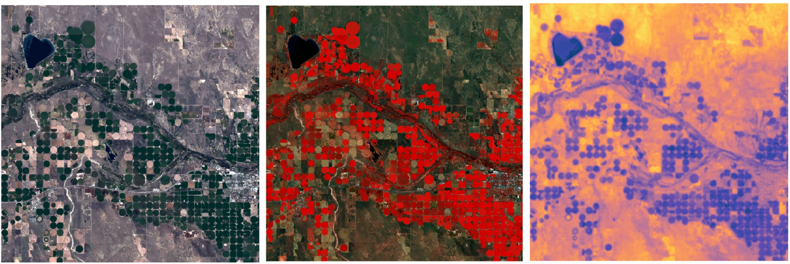
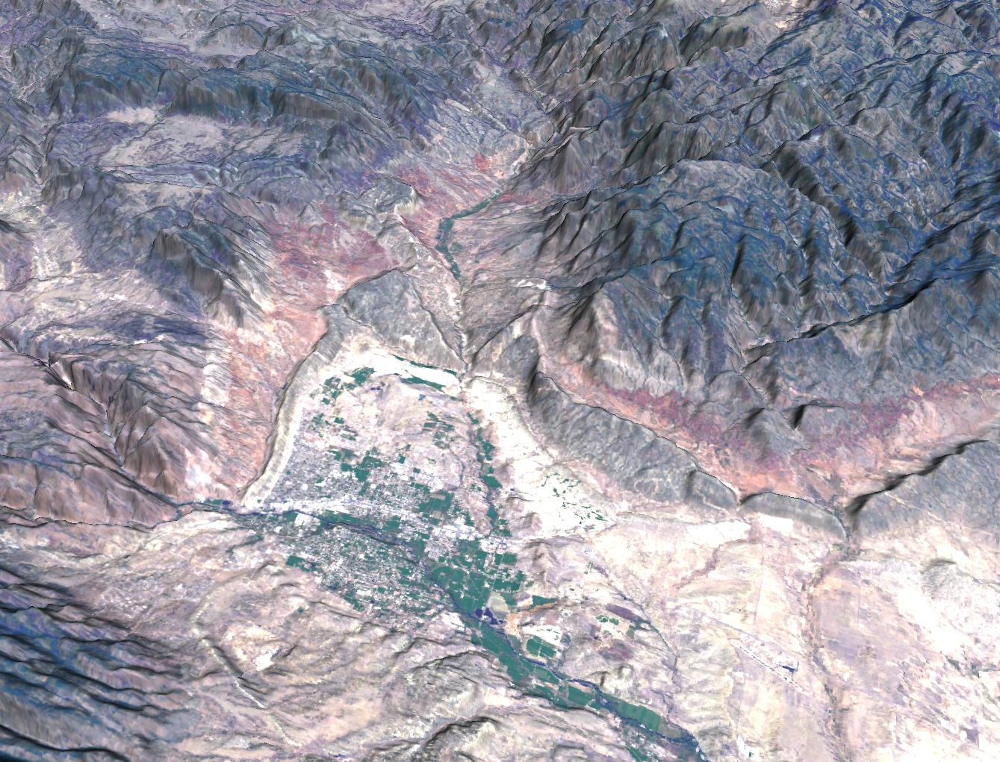
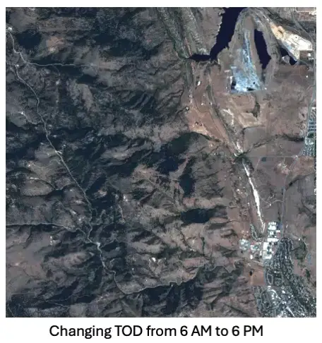
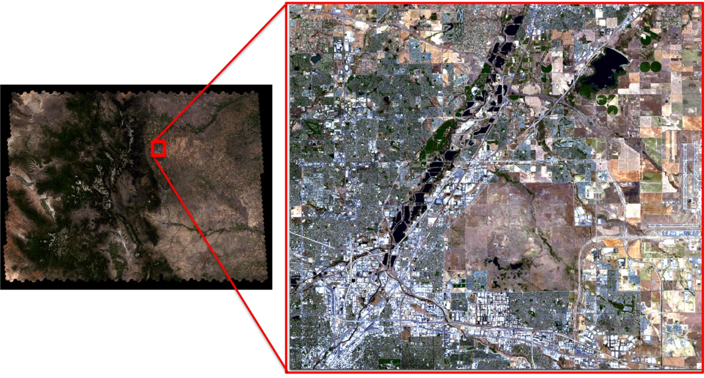
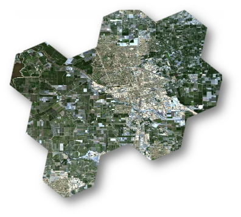

Physics-based simulation
Scene Constructor: Large-Scale DIRSIG Scene Simulation
Automated scene construction for Landsat-scale simulations and sensor trade studies.
Interactive demonstration
Landsat Pushbroom Simulation
Overview
Scene Constructor is an automated framework I developed to build large-scale virtual landscapes for physics-based remote-sensing simulations in DIRSIG. It supports sensor trade studies by allowing users to vary atmospheric conditions, sensor designs, configurations, acquisition settings, and noise levels to evaluate sensor performance across different scenarios. Primarily designed to support Landsat 10 studies, the framework can be extended to other sensors. It integrates satellite surface reflectance imagery, terrain elevation, surface emissivity, atmospheric conditions, and solar and sensor geometry to simulate imagery across reflective and thermal wavelengths. DGGRID provides hexagonal tiling and spatial indexing, organizing the landscape into reusable, geographically referenced scenes that can be assembled into continuous regions spanning a Landsat-sized footprint. By automating data acquisition, preprocessing, and scene construction, the framework enables systematic evaluation of sensor concepts before launch.
A closer look




